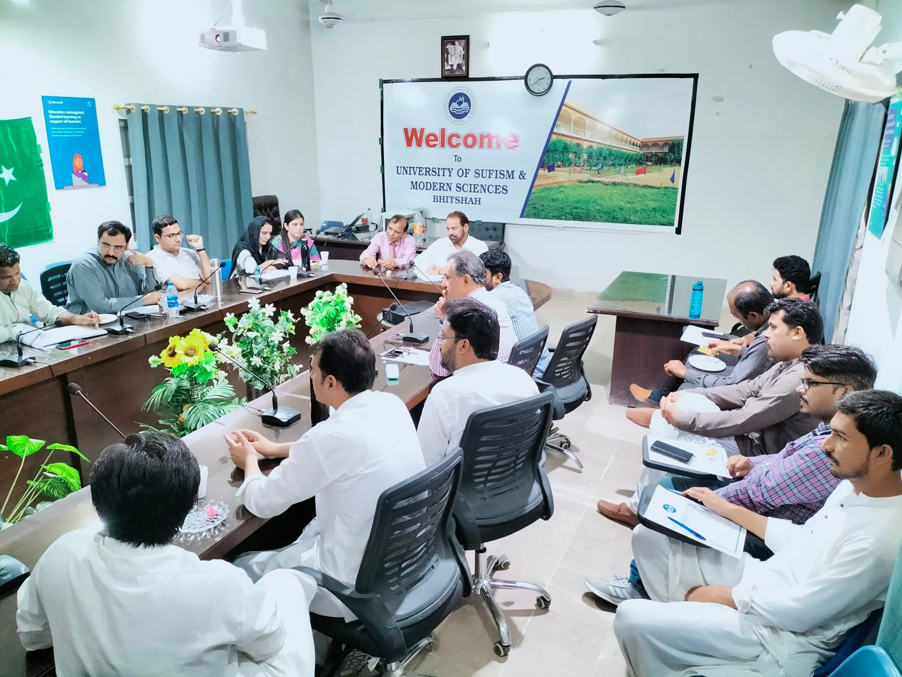
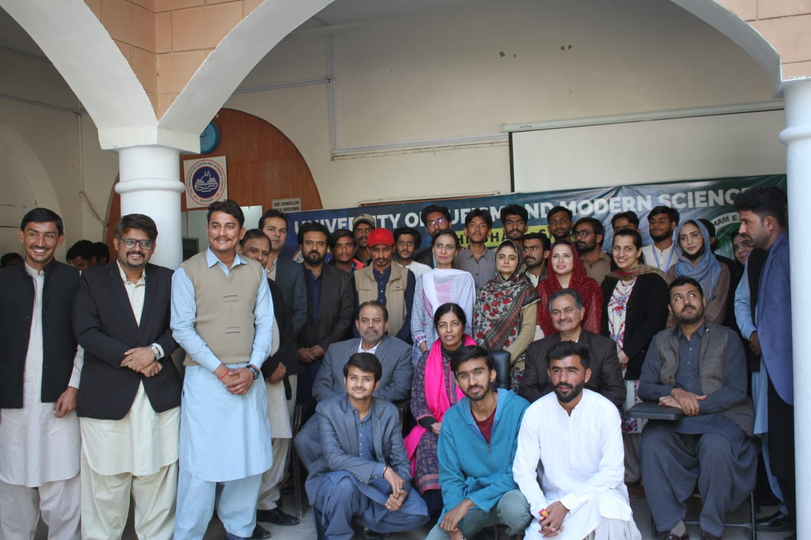
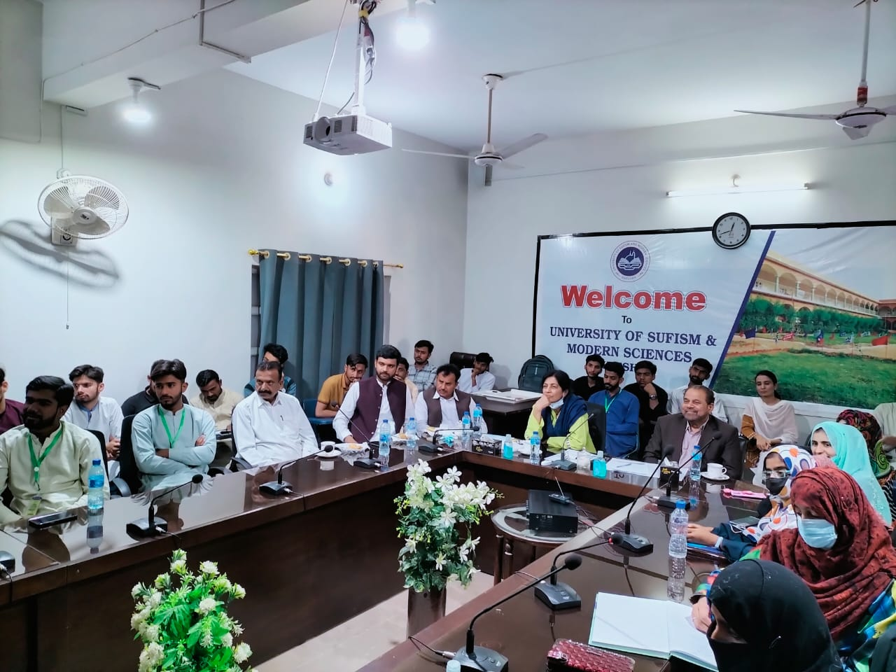
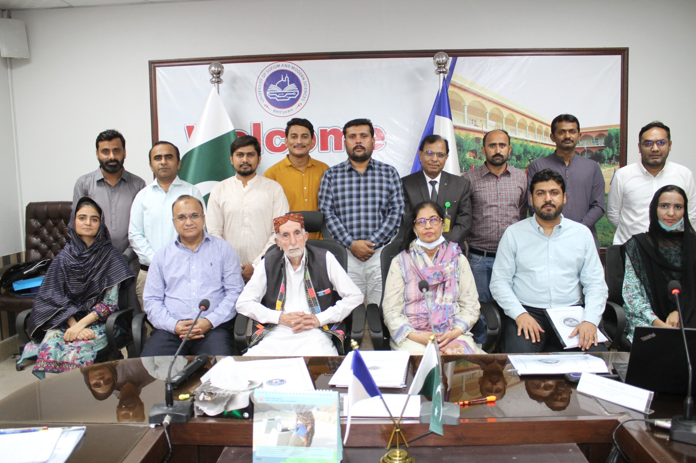

The University of Sufism and Modern Sciences (USMS) is situated in Bhitshah Town, Matiari District, home to a Shrine of the Sufi Saint HazratShah Abdul Latif Bhittai. The University of Sufism and Modern Sciences, Bhitshah was the dream and vision of our Former President Mr. ASIF ALI ZARDARI who wanted to provide quality higher education to the people of rural areas of Sindh at their door steps The Charter of the University of Sufism and Modern Sciences was approved on 21st November, 2011 under letter No: PAS/Legis-B-21/2011 dated 21/11/2011 and was initially established as a campus of University of Sindh, Jamshoro. Now the University is itself an independent University and Prof. Dr. Parveen Munshi has been appointed as the 1st Vice Chancellor of The University of Sufism and Modern Sciences, Bhitshah on 11/04/2016. The USMS is the institution of higher education whose mission is to create a transformative educational environment for attracting and retaining diverse national talent; creating a collaborative environment where research, creativity, innovation, tolerance, harmony and humanity can flourish. The vision of USMS is to solve the greatest challenges of present times by accelerating progress in the disciplines of Sufism and Modern Sciences, empowering students to fulfill their academic and professional passions, strengthening support for a dynamic faculty dedicated to teaching and research, creating innovative connections among education, culture and human values and serving the community and nation by imparting the education of Sufi Saints which focuses on tolerance, harmony, love and brotherhood
University of Sufism and Modern Sciences, Bhitshah, was established in 2011. Since 2019, five departments and a Centre for Research and Publications on Sufism have been operating. The university will organize an International Multidisciplinary Conference on Sufism and Modern Sciences”, scheduled for November 22-23,2022. Mystical Islamic beliefs or Sufism and its practices help to seek love with God and guidance for the Sirat e Mustaqeem, the actual path for humanity. This conference will provide an opportunity and a platform at the international level at this university. Your goodness and the researchers are requested to contribute to this conference. Your work can be presented in person or online. Any researchers wishing to publish their work in recognized journals; will play a role in bridging you for the same. Terms and conditions for the publications will apply. You are requested to send your novel work on the following relevant topics with the following list. We would appreciate it if you kindly send the title, abstract, and full manuscript as per schedule, already published. Our team will be in touch with you.